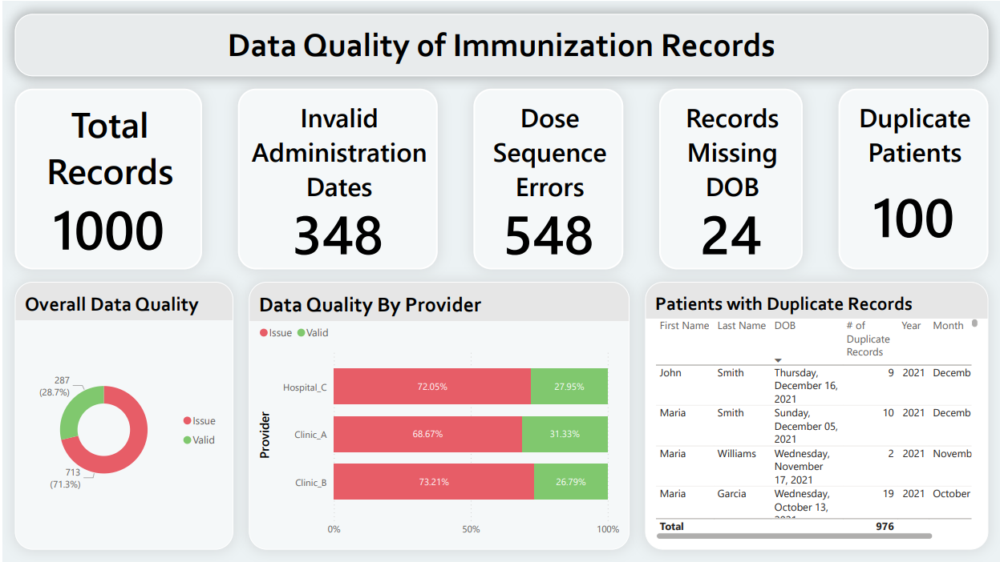

Immunization Information System Data Quality Audit
This Tableau dashboard uses hypothetical heart disease data which is publicly available on Kaggle here. This dashboard explores the distribution of key cardiovascular risk factors among female participants, including age, resting blood pressure, cholesterol levels, and maximum heart rate.